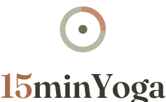
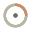
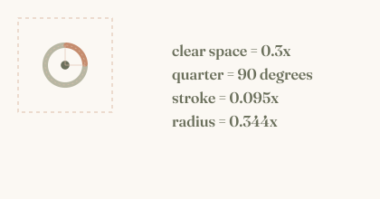
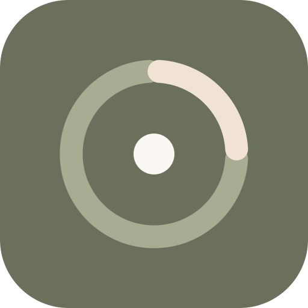
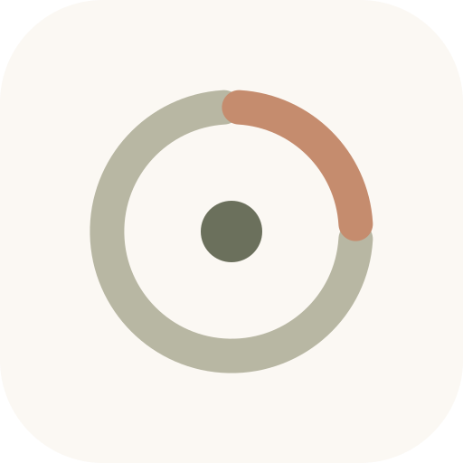
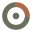
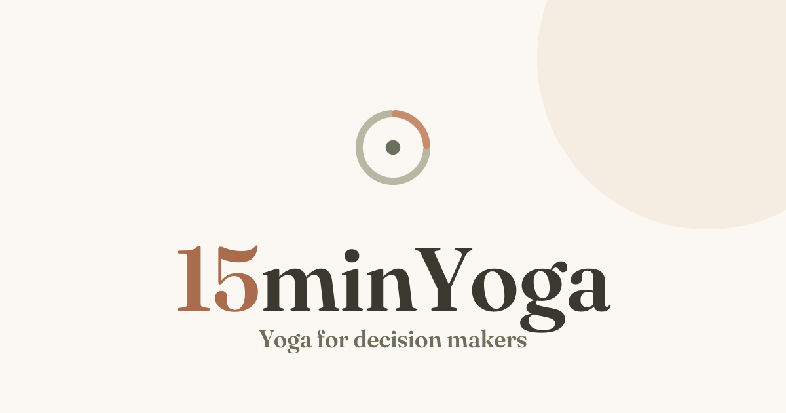

Брендбук
Версия 1.0 · июль 2026 · 15minyoga.com
01Название
Название — имя собственное. Оно не переводится и не транслитерируется ни в одной языковой версии сайта, ни в рекламе, ни в документах.
Верно: 15minYoga
· в адресах строчными: 15minyoga.com, hello@15minyoga.com
15минЙога 15 Min Yoga 15MinYoga Fifteen Minute Yoga
02Идея знака — «Четверть»
Знак — таймер-кольцо, в котором подсвечена ровно одна четверть: 15 минут из 60. Главное обещание бренда заложено в саму геометрию, а не в подпись.

- Полное кольцочас, день, целостность, цикл практики
- Подсвеченная четвертьровно 15 минут из 60 — ваша инвестиция в себя
- Точка в центреточка покоя, внимание, сам практикующий
- Разрывы дугвоздух и дыхание; глаз достраивает круг сам
Построение и охранное поле

03Система логотипов
Основной вариант — горизонтальный локап. Остальные версии решают конкретные задачи: узкое место, один цвет, тёмный фон, иконка.
Основные локапы
logo-horizontal.svglogo-stacked.svglogo-wordmark.svgmark.svglogo-with-domain.svgТёмный фон и монохром
logo-horizontal-on-dark.svglogo-horizontal-mono-light.svglogo-horizontal-mono-dark.svglogo-stacked-mono-light.svgИконки и аватары

app-icon.svg · png/app-icon-512.png
app-icon-light.svg
favicon.svg · favicon-badge.svgОбложка для соцсетей

og-cover.svg · png/og-cover.png04Цветовая палитра
«Earthy Neutrals» — тёплая природная гамма. Основа нейтральная, акцент — терракота, «якорь» — олива.
#C58C6E — для крупной графики (дуга знака).
Для текста она недостаточно контрастна, поэтому цифры «15» и мелкие акценты набираются
более глубоким #A96C4C — он проходит порог контраста для крупного текста.
Пропорции 60-30-10. 60% — Paper/Cream (воздух), 30% — Ink/Olive (текст и структура), 10% — Terracotta (акцент). Терракота — специя: ею подчёркивают одно главное действие на экране.
05Типографика
| Назначение | Шрифт | Начертание |
|---|---|---|
| Логотип | Fraunces (opsz 72) | 600 — переведён в кривые, шрифт не требуется |
| Заголовки | Fraunces | 600 |
| Основной текст | системный гротеск (SF Pro / Segoe UI / Inter) | 400–600 |
Fraunces — свободная лицензия SIL OFL, можно использовать в рекламе и печати без оплаты: fonts.google.com/specimen/Fraunces
06Минимальные размеры и охранное поле
Охранное поле — не менее 0.3 от высоты знака с каждой стороны. В него не заходят текст, другие логотипы и край макета.
| Версия | Экран | Печать |
|---|---|---|
| Горизонтальный локап | 120 px по ширине | 30 мм |
| Вертикальный локап | 80 px по ширине | 22 мм |
| Только знак | 24 px | 8 мм |
| Фавикон | 16 px (спец. геометрия) | — |
07Чего делать нельзя
- Растягивать непропорционально — ломается геометрия четверти.
- Менять цвета на непалитровые — разрушается узнаваемость.
- Добавлять тени, обводки, градиенты, объём — стиль плоский и спокойный.
- Поворачивать знак — четверть всегда начинается с «12 часов».
- Ставить цветной логотип на пёстрое фото — использовать монохром или подложку.
- Менять шрифт начертания — начертание это фиксированный вектор.
- Переводить название — 15minYoga имя собственное.
- Фон с контрастом ниже 3:1 — логотип не читается.
- Менять местами цвета кольца и четверти — четверть всегда акцентная.
08Применение
| Носитель | Что использовать |
|---|---|
| Сайт — шапка | logo-horizontal.svg, высота 30 px |
| Сайт — подвал | logo-horizontal-on-dark.svg, высота 34 px |
| Аватар соцсетей | app-icon.svg / png/app-icon-512.png |
| Превью ссылки | png/og-cover.png (1200×630) |
| Реклама на светлом | logo-horizontal.svg или logo-with-domain.svg |
| Реклама на фото / тёмном | -on-dark или -mono-light |
| Печать, мерч, гравировка | SVG, монохромные версии |
| Документы и письма | горизонтальный локап, 8–10 мм |